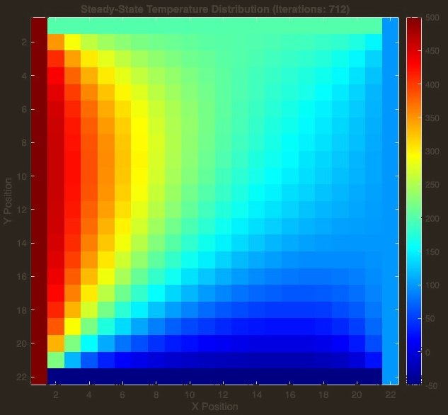

ENGR 100
Heat Map Simulation
Fall 2025, team of 4. MATLAB
My part: I led the team on the code. Our instructor gave us the app window, and we wrote the math that solves the plate and the code that draws the heat map.
A MATLAB program that shows how heat moves across a metal plate when each edge is held at a different temperature.
- The challenge
- Find settings that give an accurate, easy-to-read picture without the program taking too long.
- What we did
- We tested 5 error limits and 5 grid sizes. Each time, we changed one setting and held the other one still.
- What I learned
- The two settings have to be picked together. Past a point, a finer setting takes much longer to run but barely looks better.
40×40
best grid size
0.001
best error limit
2,264
loops to an answer
Update: I re-ran the program in November 2026. It really takes 2,264 loops, more than the estimates in the report's tables. This page uses the re-run numbers.